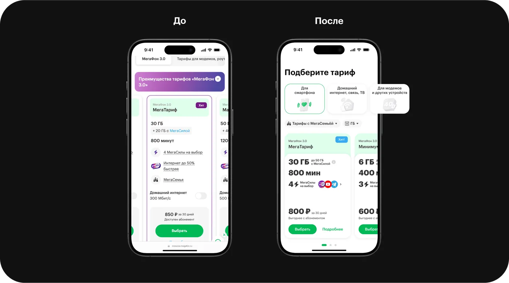

Привет!
Я Маша
Senior Product Designer
9+ лет проектирую продукты для миллионов пользователей
Опыт
Где я работала
Альфа-Банкс 2025 · Senior Product Designer
МегаФон2023–2025 · Senior Product Designer
X52020–2023 · Senior Product Designer
MedAcoustica2018–2020 · Product Designer
Сбер2016–2018 · Product Designer
Citi2013–2016 · Analyst, UI Designer
 Кейс 1 · Альфа-Банк
Кейс 1 · Альфа-Банк
Развязка
Запустили в августе в двух каналах

 Кейс 2 · МегаФон
Кейс 2 · МегаФон
Кульминация
Бизнес предложил фильтры. Я предложила пересобрать карточку


 Пятёрочка
Пятёрочка
Запустила программу лояльности X5 Клуб
+8%средний чек
10 млнMAU